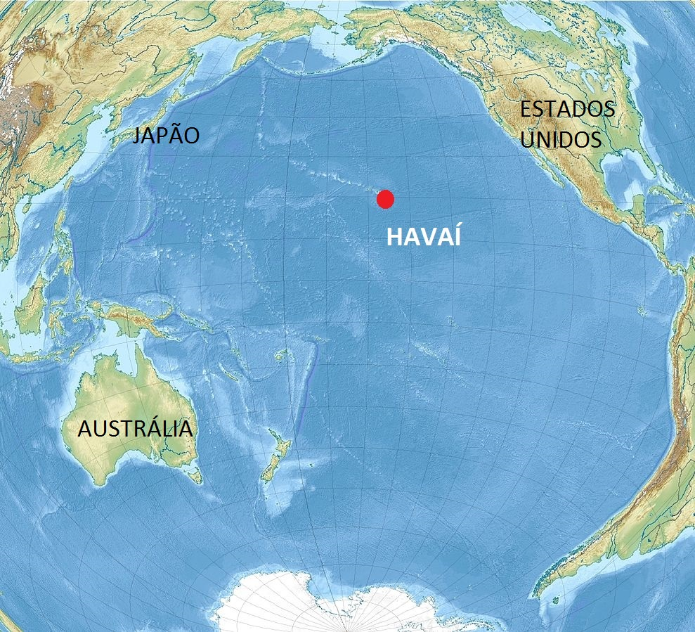
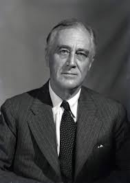

No início da década de 1940, as tensões entre os Estados Unidos e o Império do Japão atingiram um ponto crítico. Enquanto os EUA impunham embargos econômicos para conter a expansão japonesa na Ásia, o Japão planejava secretamente uma ação militar decisiva. O objetivo era anular a Frota do Pacífico dos EUA, garantindo um período de domínio naval para consolidar suas conquistas no Sudeste Asiático. A base de Pearl Harbor, no Havaí, foi escolhida como o alvo principal por sua importância estratégica.
Contexto e Estratégia

Um Domingo de Infâmia
Na manhã de 7 de dezembro de 1941, as forças japonesas executaram um ataque aéreo surpresa. Em duas ondas, mais de 350 aeronaves foram lançadas de seis porta-aviões. O ataque foi devastador: 2.403 militares e civis americanos foram mortos, 1.178 ficaram feridos, e dezenove navios da Marinha, incluindo oito couraçados, foram afundados ou danificados. A capacidade aérea da base também foi severamente comprometida, com mais de 180 aeronaves destruídas.
O Gigante Desperta

O ataque a Pearl Harbor unificou uma nação anteriormente dividida sobre o envolvimento na guerra. No dia seguinte, o presidente Franklin D. Roosevelt dirigiu-se ao Congresso e à nação com seu famoso discurso, declarando o 7 de dezembro "uma data que viverá na infâmia".
"Não importa quanto tempo leve para superar esta invasão premeditada, o povo americano, em sua força justa, triunfará até a vitória absoluta." – Franklin D. Roosevelt, 8 de dezembro de 1941
Com a declaração de guerra ao Japão, os Estados Unidos entraram oficialmente na Segunda Guerra Mundial. A mobilização de sua vasta capacidade industrial e militar foi um ponto de virada crucial, que alterou o equilíbrio de poder e selou o destino do Eixo.
Fontes Históricas e Legado
Fontes para Pesquisa
- Discursos Presidenciais: Análise do discurso "Dia da Infâmia" de Roosevelt.
- Reportagens da Época: Artigos de jornais e transmissões de rádio dos dias que se seguiram ao ataque.
- Documentos Militares: Relatórios oficiais da Marinha dos EUA e documentos desclassificados sobre a estratégia japonesa.
- Análises Historiográficas: Livros e artigos de historiadores que examinam as causas e consequências do evento.
Hoje, o Memorial do USS Arizona em Pearl Harbor serve como um local solene de memória, homenageando as vidas perdidas e lembrando ao mundo as consequências trágicas do conflito.